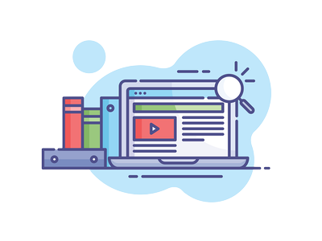
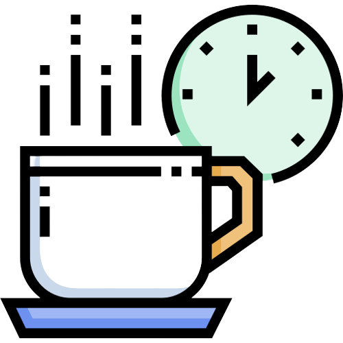
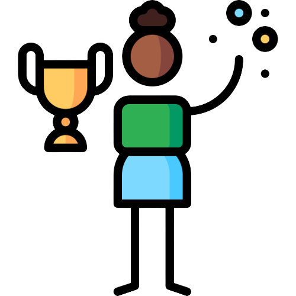
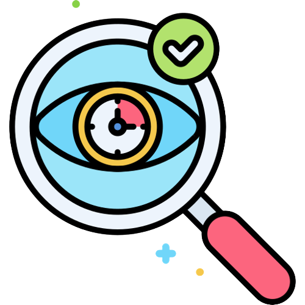
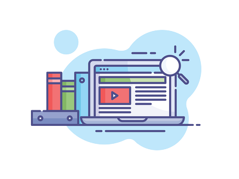
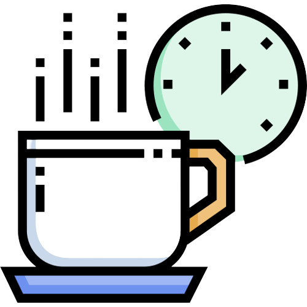
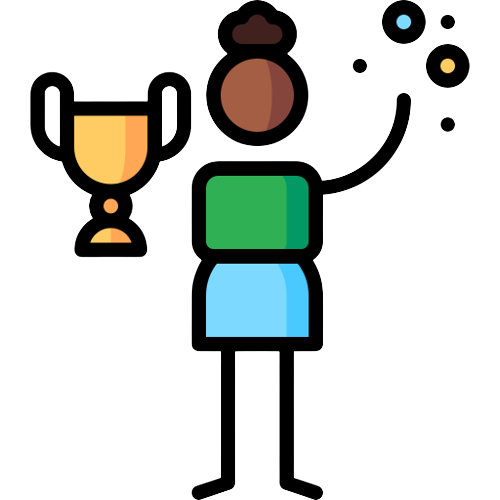
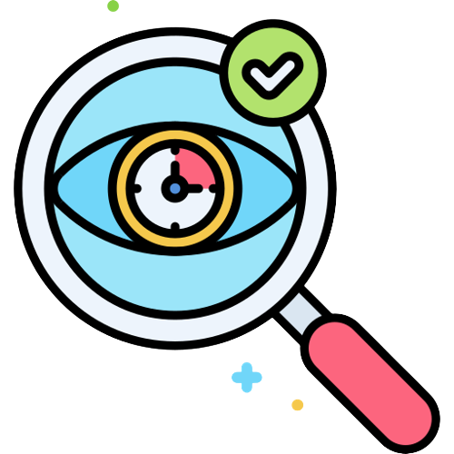

GoalMinder Tips
Having difficulties with setting goals? Here are some tips and advice on setting objectives!
1.Use an App! Are you ready to start pursuing your hobbies and activities? Then look no further than GoalMinder! This user-friendly app lets you choose up to three hobbies and activities, and it helps you keep track of your tasks. It's especially useful if you're not sure what steps to take to start a new hobby or activity and need guidance on what to do next. With GoalMinder, you'll have a handy tool to help you stay organized and motivated on your path towards achieving your goals.
 2.Formulate a plan with a well-defined progression of actions: To achieve, create a clear plan with specific steps. Improving skills requires concrete actions, not hope. Assess what's needed to develop desired abilities, set smaller goals and work towards them.
3.Recognize valuable resources and supportive networks: Locating supportive resources can be a simple and effective way to start making progress towards your writing goals. These resources may include podcasts, webinars, or online articles.
< 
4.Take breaks and prioritize rest: It's important to remember that rest is just as important as working towards your goals. That's why GoalMinder includes "Rest" as a task in each category to help you prioritize self-care and ensure you're taking enough breaks. Be sure to schedule regular breaks throughout the day to recharge your batteries and aim for sufficient sleep each night. By taking care of yourself, you'll be better able to stay focused and motivated on achieving your objectives.

5.Recognizing Your Progress and Accomplishments: As you work towards achieving your goals, it's essential to acknowledge and appreciate the progress and accomplishments you've made along the way, no matter how small they may seem. With GoalMinder, you'll have an added celebration when you complete all of your tasks! Celebrating your progress and accomplishments can help keep you motivated and build momentum towards your ultimate goal. So, take a moment to recognize your hard work and perseverance and give yourself a well-deserved pat on the back.

6.Review and establish fresh writing objectives: Goal setting is an ongoing process that requires continuous evaluation. After achieving a writing goal, it's important to reflect on what comes next. Are you making progress toward your larger plan? Have you exceeded your expectations? Are there new goals to set or adjustments to be made? These are all important questions to consider. GoalMinder makes it simple to revise your goals and revisit them whenever you require a refresher on what you're striving for. Don't hesitate to make changes to your plan and use GoalMinder as a tool to help you stay on track and motivated.

2.Formulate a plan with a well-defined progression of actions: To achieve, create a clear plan with specific steps. Improving skills requires concrete actions, not hope. Assess what's needed to develop desired abilities, set smaller goals and work towards them.
3.Recognize valuable resources and supportive networks: Locating supportive resources can be a simple and effective way to start making progress towards your writing goals. These resources may include podcasts, webinars, or online articles.
< 
4.Take breaks and prioritize rest: It's important to remember that rest is just as important as working towards your goals. That's why GoalMinder includes "Rest" as a task in each category to help you prioritize self-care and ensure you're taking enough breaks. Be sure to schedule regular breaks throughout the day to recharge your batteries and aim for sufficient sleep each night. By taking care of yourself, you'll be better able to stay focused and motivated on achieving your objectives.

5.Recognizing Your Progress and Accomplishments: As you work towards achieving your goals, it's essential to acknowledge and appreciate the progress and accomplishments you've made along the way, no matter how small they may seem. With GoalMinder, you'll have an added celebration when you complete all of your tasks! Celebrating your progress and accomplishments can help keep you motivated and build momentum towards your ultimate goal. So, take a moment to recognize your hard work and perseverance and give yourself a well-deserved pat on the back.

6.Review and establish fresh writing objectives: Goal setting is an ongoing process that requires continuous evaluation. After achieving a writing goal, it's important to reflect on what comes next. Are you making progress toward your larger plan? Have you exceeded your expectations? Are there new goals to set or adjustments to be made? These are all important questions to consider. GoalMinder makes it simple to revise your goals and revisit them whenever you require a refresher on what you're striving for. Don't hesitate to make changes to your plan and use GoalMinder as a tool to help you stay on track and motivated.

In conclusion, setting and achieving goals is a process that requires dedication, persistence, and self-care. By using GoalMinder and following these tips, you can stay organized, motivated, and focused on your path towards success. Remember to take breaks, celebrate your accomplishments, and regularly reevaluate and set new objectives. With the right mindset and tools, you can accomplish anything you set your mind to. Good luck on your journey!